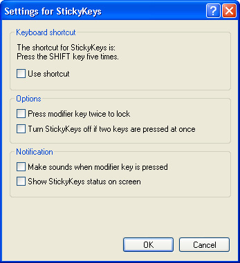

Free
computer Tutorials
|
Free
computer Tutorials
|
|
 home home |
Stay at Home and Learn | ||||
|
Accessibility Options - Windows XP StickyKeys
This tutorial assumes that you have set the Control panel to Classic View in Windows XP. To see how to do this, click this link (opens in a new window): Set the Control Panel to Classic View
The StickyKeys Option is for people who have problems holding down two or more keys on the keyboard at the same time. If you want to bring up the Task Manager, for example, you'd hold down the CTRL and ALT keys on your keyboard, and then press the Delete key. If, for whatever reason, you're not able to do this, then StickyKeys can come in handy.
To bring up the StickyKeys dialogue box, click the Start button in the bottom left of your screen, then click Control Panel on the Start menu. From the Control Panel, double click "Accessibility Options". You'll see the following dialogue box:
Put a tick in the box where it says "Use StickyKeys". Then click the Settings button. You'll see this dialogue box:  There are only five settings, grouped into three categories. If your keyboard is making srtange, high-pitched noises, then you might have a tick in the box at the top "Use Shortcut". This switches StickyKeys on or off when you hit the Shift Key 5 times in a row (the Shift key is the one with the up-pointing arrow, usually just below the Caps Lock key). The first Option, Press modifier key twice to lock, is probably the most useful one. When this is ticked, it locks the CTRL, Shift, ALT, or Windows logo key. Then you just need to press the shortcut key on the keyboard. You wouldn't need to hold two keys down at the same time. For example, the keyboard shortcut to copy things to the Windows clipboard is CTRL + C. To paste, it's CTRL + V. With the "Press modifier key twice to lock" option ticked, press the CTRL key twice. This locks it. Now you don't have to keep holding down the CTRL key when you want to copy and paste. Just press C then V. Unfortunately, activating this option means you can't switch between programmes! You're stuck to using one programme at a time until you turn it off. The Notification area is if you want Windows to make that awful high-pitched noise when the modifier keys are pressed. (The modifier keys are CTRL, Shift, Alt, or the Windows logo key.) If you want some visual notification that StickyKeys is on, tick the final option: Show StickyKeys status on screen. Selecting this option will make an icon appear near the clock, as in the following image:
The StickyKeys icon is the one on the far left - the one with the black rectangles.
If you really do have problems holding down two or more keys at the same time, then StickyKeys can come in useful. But you may need the Valium handy to cope with that nerve-jangling, high-pitched noise that Windows make!
|
|||||
|